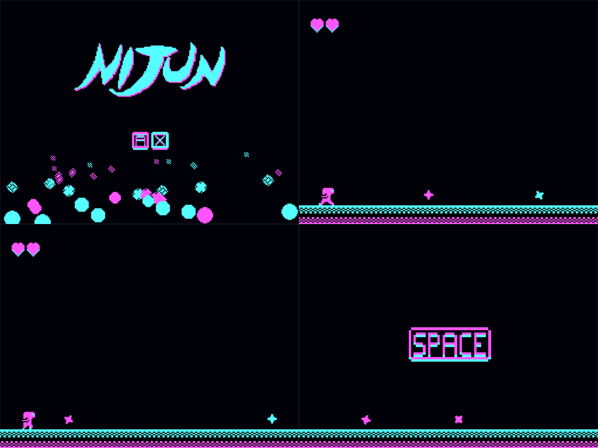

DOWNLOAD LINKS


| Status | Finished |
| Year | 2021 |
| Genre | Arcade |
| Engine | Clickteam Fusion 2.5 |
Nijun is a minimalistic, reflex-based infinite runner starring a ninja in a CGA world. It has a simple two-button control scheme, and the objective is to essentially survive as long as possible while deflecting shurikens flying at you. The shurikens come in two different colors, and by pressing the correct button, you’ll perform an attack that will prevent you from getting a faceful of the sharp thing(s).
This game was made for the Mini Jam 74 game jam. The theme of the jam was Chaos, and games for the jam had to be made using a pre-determined set of buttons for their control scheme. I also gave myself the extra limitation of making all of the game’s graphical assets using only 4 colors – specifically, those of the CGA color palette. Even of those colors, only 3 ended up being actually used.